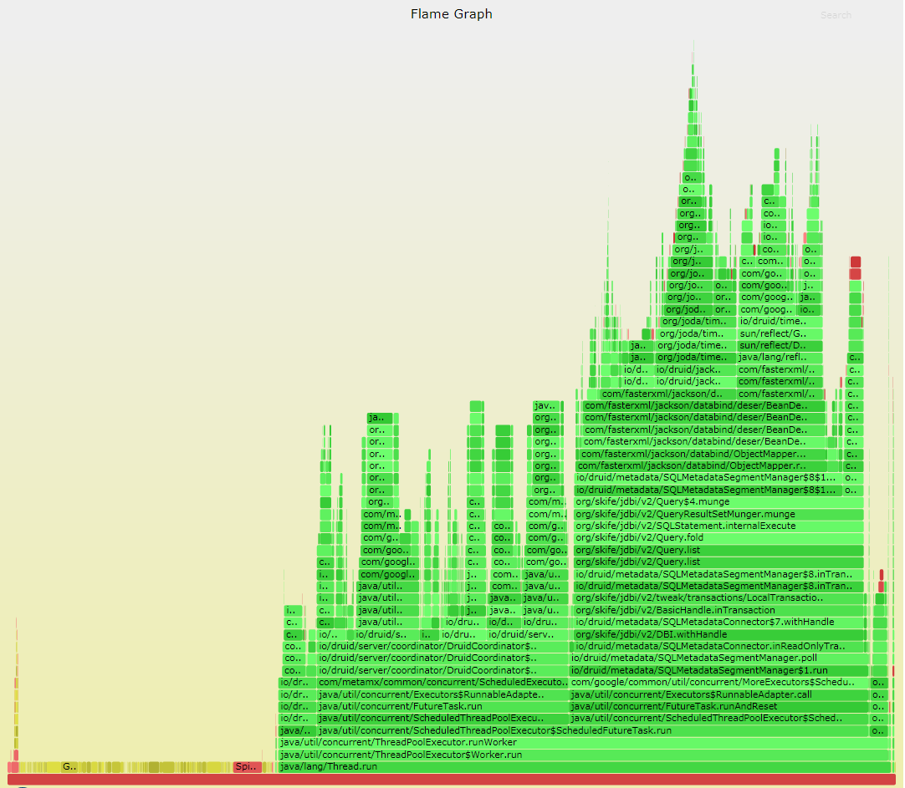
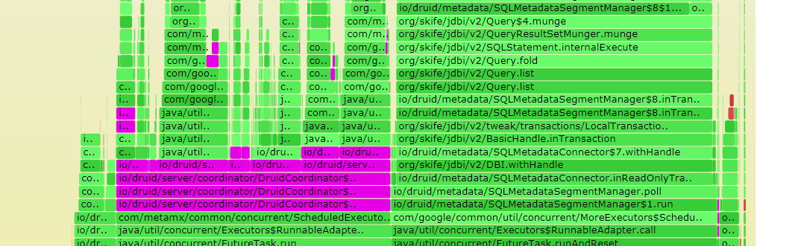
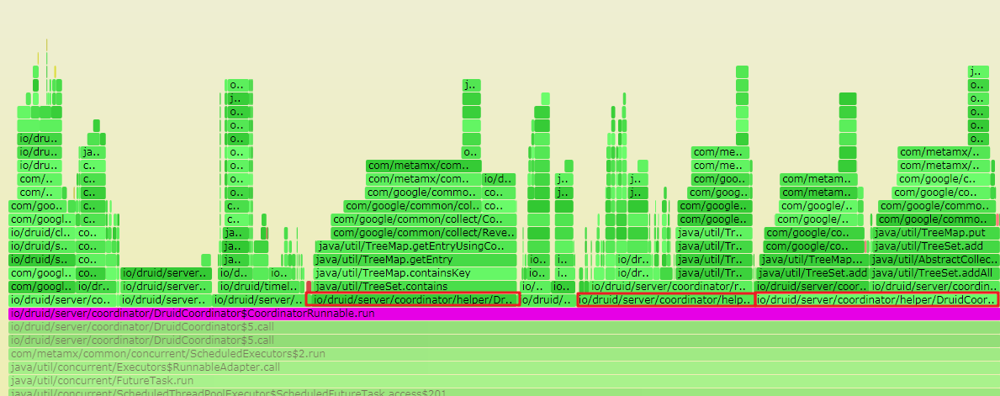
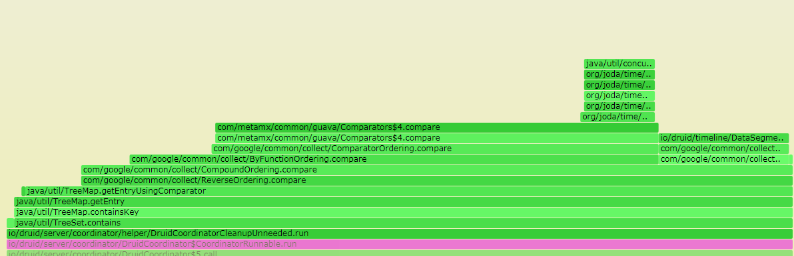

1. 场景描述：
因为生产环境组件服务进程执行缓慢导致部分资源无法释放，进而引起了各种任务超时。研究源码发现，部分执行过长的是操作都是在单线程中串行 。这就意味着，单个过程的执行效率会影响到整个流程的调度周期。为此，我们需要对部分组件源码进行改造，串行改并行。
串行改并行，我们要小心流程执行顺序之间的依赖关系和各个线程对共享变量的读写。这里的前提是我们得知道改哪里。其实我们的需求很明确，执行过程耗时长的我们优先改造,也就是我们需要找到组件的性能瓶颈。但是如何确认呢?最终，我是通过火焰图观察，找出了耗时比较长的过程。下面记录一下这个过程，以便日后需要的时候可以有所帮助。
2. 火焰图
火焰图是通过可交互的图片反映出程序执行过程中的调用栈和大致的CPU占用百分比。在火焰图中，顺着Y轴从下往上看表示的是调用顺序，高度表示的就是调用栈的深度。顺着X轴看，一个方法的长度表示的就是这个方法的被抽到的样本数，被抽到的次数越多，占用的CPU时间就越长。当把鼠标放在一个方法上时，会显示一段说明，例如
(5222 samples, 7.6%),这个表示的就是，这个方法在采样期间被采样了5222次，占用总样本的7.6%。注意X轴不表示时间，不是说左边的方法一定在右边之前执行。火焰图应该是高低起伏的，如果都是很宽的平顶，那程序性能就需要重新评测了。另外，火焰图的颜色没有任何含义。
火焰图是可交互的，在浏览器中我们打开火焰图之后可以直接CTRL+F进行搜索。输入完整的方法名或者正则表达式之后，所有匹配到的方法都是高亮显示出来。

单击这些高亮部分就会放大这一部分，显示选中方法的子方法(被调用的方法)。这样就可以在这张图中搜索自己想要确认的模块，然后找到比较宽的部分，定位到代码，确定是否可以修改。
3. 生成火焰图
3.1 工具
火焰图生成工具：javaPfro.zip
提取码：76o9
这个工具包解压之后会用两个文件夹：async-profiler-masterFlameGraph-master
文件夹下部分可执行文件，可能需要755权限。这里不做一一声明，直接更改文件夹下所有文件的权限。chmod -R 755 async-profiler-master/*chmod -R 755 FlameGraph-master/*
3.2 操作步骤
火焰图只是以图片形式展示出了CPU中的调用栈，实际的数据还是需要从CPU中采集。所以生成火焰图共分为两步：采样和生成svg图。
####3.2.1 采样
采样使用async-profiler-master工具，具体命令如下：./async-profiler-master/profiler.sh -d 10 -o collapsed -f /tmp/collapsed.txt 1234
以上命令表示的意思是，采样时间为10秒，采样得到的数据重定向到/tmp/collapsed.txt，被采样进程id为1234。
3.2.2 生成svg图
根据采样数据生成svg图，使用的是FlameGraph-master,具体命令如下:./FlameGraph-master/flamegraph.pl --colors=java /tmp/collapsed.txt > flamegraph.svg
命令表示的意思是把/tmp/collapsed.txt这个文件转换svg火焰图，文件名为flamegraph.svg。
然后,把这个文件拉到window环境下，用浏览器就可以打开了。这里我用的是chrome浏览器。
4. 分析火焰图
分析火焰图一般需要先确定需要分析的类或方法名，或者代码入口方法，或者入口类。这样我们可以先定位到一个方法调用，再分析其调用栈。

例如，在这张图片中，我确定的方法是定义在CoordinatorRunnable类中的，就可以直接搜索这个类。定位到这个类我们可以明显地看到有三个方法占用了大部分的时间。再继续追踪调用栈。

可以看出，耗时大部分都花费在集合元素的比较上。这里我们如果需要优化的话，可以考虑一下比较器的逻辑或者可以根据场景判断一下是否可以选择其他的集合等等。